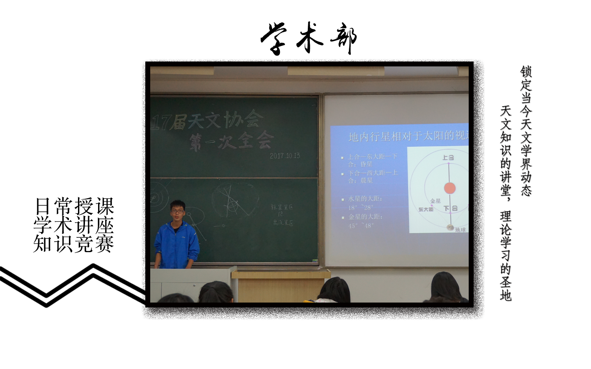
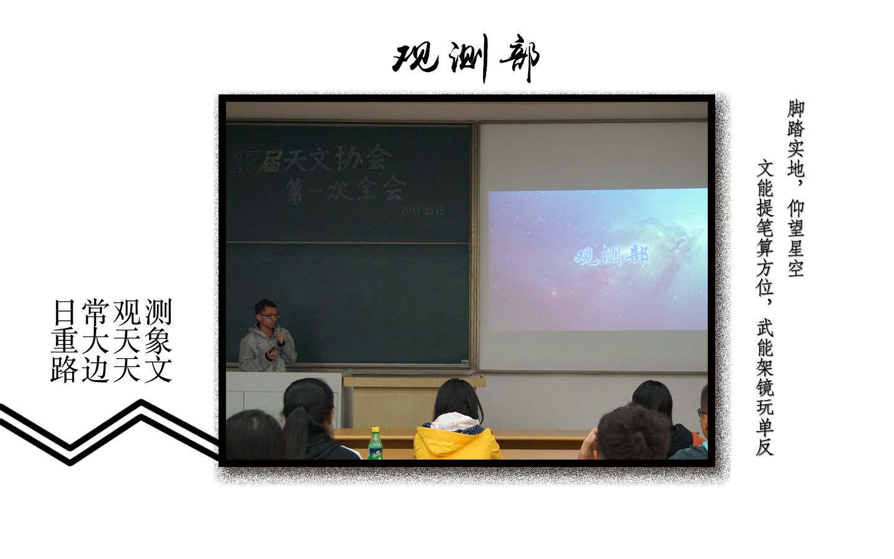
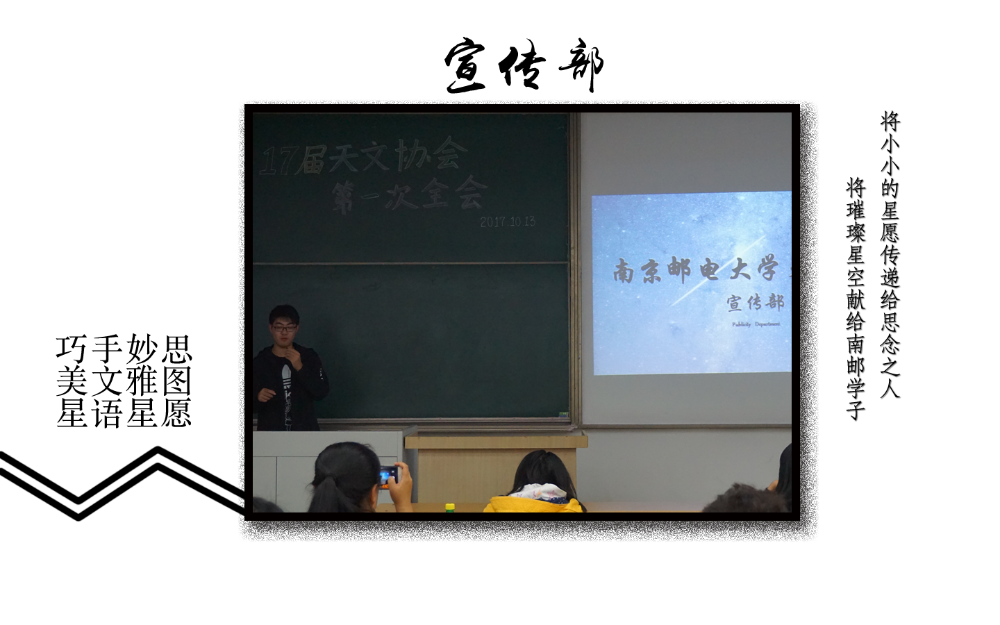
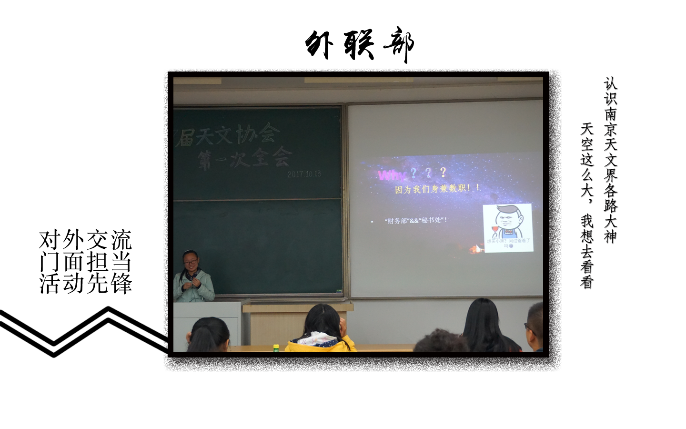

| 日常授课 |
主讲人：会长及其他中干、社员小组、指导老师
授课内容：详见活动导览-授课计划 授课对象：全天协 |
| 学术讲座 |
学术讲座不定期举办，详情请联系我们。
|
| 知识竞赛 |
“星特朗杯”南京高校天文联合会天文知识竞赛由南天联也就是南京高校天文联合会组织，其主要目的是提高大学生学习天文知识的热情，提高当代大学生的综合素质。欢迎大家踊跃报名天文知识竞赛，具体事宜到时通知。
|


| 日常观测 |
天气情况良好时观测部通常会组织在操场上的观测活动，不定时举办。
参与校级活动时我们也会组织观测活动。 |
| 外出观测 |
每年清明时节左右，我们将组织社员前往紫金山天文台盱眙观测站进行观测。
每年秋冬季，我们会举办羊山湖公园露营活动，并邀请同属南天联的其他高校的天文社团参加活动。 |

| 线上宣传 |
宣传部负责运营天文协会的官方QQ号、微信公众号。
1.推送最新的天协动态：活动预告、活动报道等信息。 2.推送每周一星、星座故事等信息。 |
| 线下宣传 |
宣传部负责海报绘画、礼品制作等工作。
|

| 联络外校和企业 |
外联部是天文协会对外交流的窗口，负责与其他高校合作举办活动的事宜及联络企业寻求赞助的事宜。
|
| 活动企划 |
外联部负责规划天文协会的活动事项，也负责管理资金使用。
|